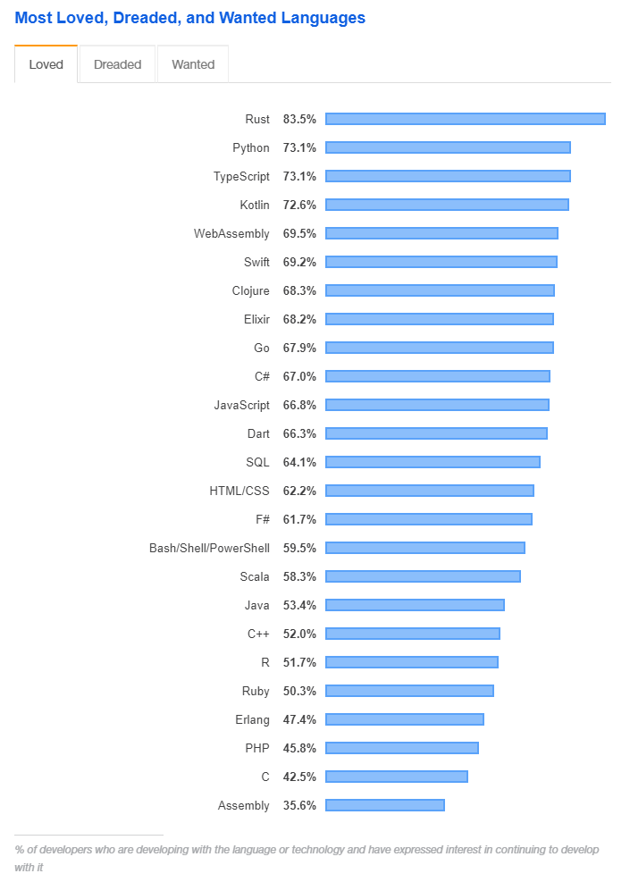
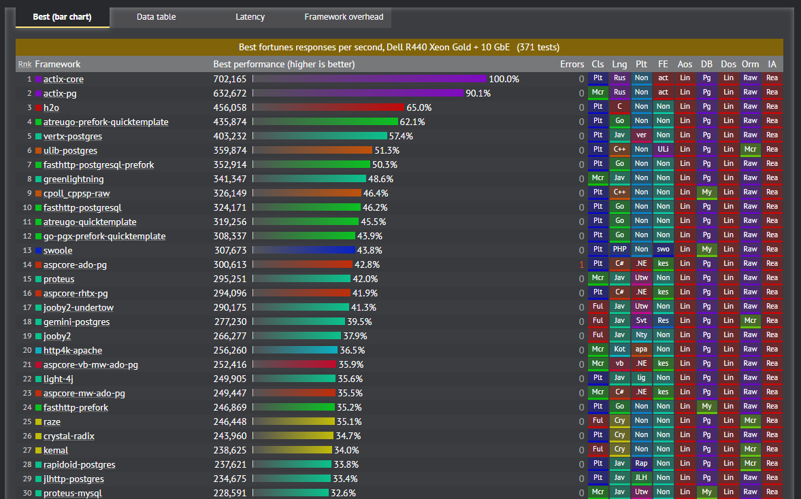
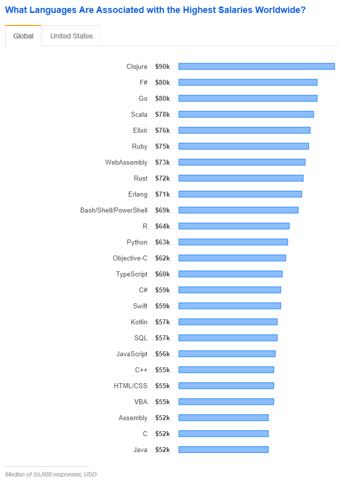
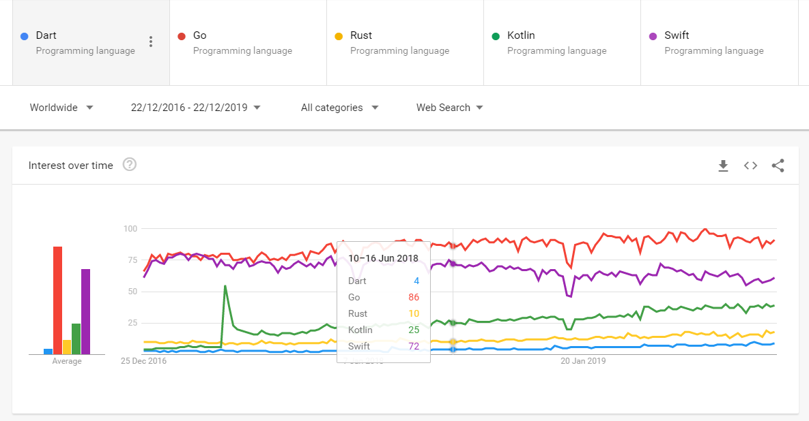

What do I mean by sexy programming languages?
I refer to programming languages as sexy if they are not yet mainstream, but have plenty of buzz around them. They usually have a small but very energetic community, but may be lacking mature libraries here and there due to their only recent stardom. This also provides opportunities for ambitious developers to contribute to open-source. Therefore my list will exclude any mature languages like: Java, Python, C#, PHP and JavaScript.
Why you may want to learn these? Being an early adopted can be risky, because the chosen platform may fail to take off. But, if chosen well, it can propell your resume to new heights as well as open up new opportunities for teaching others and contributing to open source. Below I will go through technologies that I consider solid choices for learning going into 2020.
No.5 Dart
Google-backed programming language has been around since 2011, but its use has only skyrocketed in 2019 after the launch of Flutter framework version 1.0. Flutter allows developers to develop cross-platform mobile applications with performance that is faster than React Native and approaching the speeds of platform-native apps. Dart has also been well received by the open source community, there are numerous interesting projects in Github that are using Dart, everything including web servers to desktop apps.
 7shifts
7shifts
According to my research, the best resources for learning Dart are:
No.4 Swift
Apple-backed programming language which enables developers to build applications for both macOS, iOS and watchOS devices, as well as Linux. Swift has made waves when it appeared in 2014, finally replacing the aging Objective-C. This language has been accepted well by the community and ranks very well in StackOverflow’s Most Loved Languages rankings. According to Google Trends, Swift has steadily risen in popularity, but its adoption has slowed a bit because development outside the Apple ecosystem has been quite limited. Nevertheless if you plan to do development for the Apple ecosystem, Swift is your #1 choice.
 Igor Son
Igor Son
The best resources I could find for learning Swift:
No.3 Rust
Mozilla-backed is a multi-paradigm, system programming language, which means that it is a language optimized for performance and better interaction with underlying hardware while sacrificing ease of use and multi-platform compatibility of its features. Mozilla announced Rust in 2010, but the first version was launched in 2015. Being a system-programming language, Rust requires a steeper learning curve. Developers that use Rust often refer to it as the more elegant or modern C++, and they share some commonalities:
- They are both on top of the hill when it comes to speed
- They both do not use a garbage collector
- Their syntax is similar
However, Rust improves on C++ in several ways:
- Improved memory safety features
- Excellent package management
- Strict compiler that checks your code style
Community around Rust is very enthusiastic and most developers that use it claim to love it. See for yourself, here are results from Stackoverflow’s survey of most loved programming languages: 
Plenty of desktop applications are currently being written in Rust, including their own Mozilla Firefox. However, there is plenty of enthusiastic developers contributing to its web frameworks as well, and there are good reasons for it, take a look at benchmarks maintained by techempower.com: 
Best resources I could find for picking up Rust:
No.2 Kotlin
Jetbrains-backed programming language is a fantastic choice for Java developers because it runs on the same JVM platform. Kotlin version 1.0 has been released in 2016 and has grown in popularity very quickly. According to my personal experience, Kotlin has been adopted well in the mobile-development community for Android and I can see its growth continue. In comparison to Java, Kotlin developers like a more concise syntax and modern language features like object immutability, extension methods and deconstructor methods. The list goes on. As of 2019 Google announced that Kotlin is its preferred language for Android development. Here is an introduction of Kotlin by Google at their Google I/O conference of 2017:
The best resources I could find for learning Kotlin:
No.1 Golang (Go)
Google-backed programming language takes an ultra-modern approach to programming. Instead of adding new features to what is already popular, Go gets rid of many older concepts of programming languages. Lack of inheritance is one such example, which forces the developer to use composition instead. After removing everything the founders considered legacy, and adding modern approaches to managing concurrency and memory, a new, concise, clean programming language was born. Some may even call it sexy ;)

Several big names in the industry make use of Go; Uber, Lift, Grab and Shopify are just some examples. Docker is built in Go as well. In terms of maturity Go is the most popular out of the 5 programming languages, approaching the levels of mainstream.
Go is generally loved by its developers (as seen the Rust chart above) and developers that know Go are quite well paid:

The best resources I can find for learning Golang:
-
Building Web Application in Golang (An excellent comprehensive totorial)
-
Go by Example (Dozens of basic examples for common tasks in Go)
Google Trends comparing these 5 programming languages:

I hope this helps you decide how to spice up your resume or your side projects :)